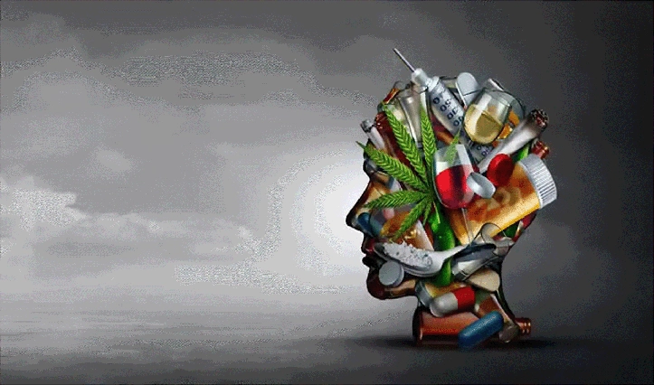

Adicciones y Ayurveda: Camino a la Recuperación Integral
Las adicciones, ya sean a sustancias, comportamientos o incluso a patrones de pensamiento, representan un desafío profundo que impacta todos los niveles del ser humano: físico, mental, emocional y espiritual. Desde la perspectiva milenaria del Ayurveda, estas dependencias no se entienden como simples faltas de fuerza de voluntad, sino como manifestaciones de un desequilibrio integral en la constitución del individuo. El Ayurveda aborda este fenómeno con un enfoque holístico, que incluye la restauración del Agni (fuego digestivo y transformador), la eliminación de Ama (toxinas) y la rearmonización de los doshas. Así, se propicia un camino hacia la recuperación a través de terapias naturales, ajustes en la dieta, prácticas de yoga y meditación, y cambios en el estilo de vida que permitan reconectar con el equilibrio interno.
Índice de Contenidos
- 1. Introducción: Las Adicciones y su Relevancia en la Medicina Ayurveda
- 2. Visión Ayurvédica sobre las Adicciones
- 3. Causas y Desequilibrios que Contribuyen a las Adicciones
- 4. Enfoque Terapeútco Ayurvédico para Superar las Adicciones
- 5. Estilo de Vida y Prácticas Complementarias para la Recuperación
- 6. Reflexión Final: El Camino Hacia un Equilibrio Integral
- 7. Fuentes Consultadas
1. Introducción: Las Adicciones y su Relevancia en la Medicina Ayurveda
El fenómeno de las adicciones abarca desde el abuso de sustancias como el alcohol y las drogas, hasta comportamientos compulsivos tales como el juego, la dependencia digital o incluso ciertos hábitos alimenticios. En la sociedad moderna, la rapidez de los cambios, el estrés constante y la presión social han contribuido a un aumento de estos problemas. En el Ayurveda, se considera que la raíz de las adicciones reside en un desequilibrio profundo del organismo: un Agni debilitado, la acumulación de Ama y la predominancia de cualidades rajas y tamas en la mente. Este desequilibrio no solo afecta la salud física, sino que también perturba la estabilidad emocional y espiritual, creando un ciclo vicioso que lleva al individuo a buscar consuelo en patrones adictivos.
2. Visión Ayurvédica sobre las Adicciones
El enfoque ayurvédico se distingue por tratar al ser humano en su totalidad. En este marco, se integran los aspectos físico, mental y espiritual para entender las adicciones:
- Integración de Cuerpo, Mente y Espíritu: Las adicciones se manifiestan como síntomas de una desarmonía integral, afectando tanto lo físico como lo emocional y espiritual.
- Desequilibrio de los Doshas: Un desajuste en Vata, Pitta o Kapha puede predisponer a la persona a comportamientos adictivos, buscando alivio en estímulos externos.
- Predominio de Rajas y Tamas: La influencia excesiva de estas cualidades en la mente propicia la búsqueda de gratificación inmediata y la evasión del dolor emocional.
3. Causas y Desequilibrios que Contribuyen a las Adicciones
- Desequilibrio de los Doshas: La falta de armonía entre Vata, Pitta y Kapha genera síntomas emocionales y físicos que impulsan a la búsqueda de alivio en comportamientos adictivos.
- Agni Débil y Acumulación de Ama: Un Agni ineficiente impide la correcta transformación de alimentos y experiencias, dando lugar a la formación de Ama, que afecta tanto al cuerpo como a la mente.
- Cualidades Mentales Alteradas: El exceso de rajas y tamas crea un entorno interno turbulento, dificultando la claridad mental y la estabilidad emocional.
- Factores Externos: El estrés laboral, relaciones interpersonales conflictivas y un entorno cultural que premia la inmediatez pueden exacerbar las predisposiciones internas.
- Condicionamientos y Experiencias Tempranas: Experiencias traumáticas o condicionamientos en la infancia pueden dejar cicatrices emocionales que predisponen a la dependencia.
4. Terapias y Tratamientos Ayurvédicos para Superar las Adicciones
El tratamiento ayurvédico es altamente individualizado y se centra en restaurar el equilibrio integral del individuo. Algunas de las estrategias incluyen:
- Panchakarma: Conjunto de terapias de desintoxicación que eliminan el Ama y restablecen el Agni, preparando el cuerpo para la sanación.
- Uso de Hierbas y Adaptógenos: Plantas como Ashwagandha, Brahmi, Tulsi y Shankhapushpi ayudan a calmar el sistema nervioso, reducir el estrés y promover la claridad mental.
- Dieta Sattvica: Una alimentación que fomenta la pureza y claridad mental, evitando alimentos procesados y estimulantes, y favoreciendo alimentos frescos y orgánicos.
- Meditación y Yoga: Prácticas regulares que facilitan la reconexión con el yo interior, mejoran la autoconciencia y ayudan a gestionar las emociones.
- Terapia de Conversación: Integrar asesoramiento psicológico basado en principios ayurvédicos para identificar y transformar patrones mentales negativos.
5. Estilo de Vida y Prácticas Complementarias para la Recuperación
Adoptar un estilo de vida equilibrado es fundamental para la recuperación. Se recomienda:
- Dinacharya (Rutina Diaria): Establecer horarios regulares para comidas, descanso y actividades físicas para mantener el equilibrio de los doshas.
- Ejercicio Físico Moderado: Actividades como caminar, yoga o estiramientos ayudan a liberar tensiones y mejorar la circulación de la energía vital.
- Pranayama: Ejercicios de respiración que regulan el flujo de energía y reducen el estrés.
- Meditación y Mindfulness: Prácticas diarias que fomentan la introspección y la gestión emocional, facilitando la identificación de patrones adictivos.
- Conexión con la Naturaleza: Pasar tiempo en entornos naturales para promover la relajación y la reconexión con la esencia vital.
- Apoyo Social: Participar en grupos de apoyo o comunidades que compartan valores y prácticas saludables puede ser determinante en el proceso de recuperación.
6. Reflexión Final: El Camino Hacia un Equilibrio Integral
Superar una adicción es un camino complejo que requiere compromiso, autoconocimiento y una transformación profunda. El Ayurveda, al abordar la raíz del desequilibrio en lugar de solo los síntomas, ofrece herramientas poderosas para romper el ciclo de dependencia. Cada paso en el proceso de recuperación implica tanto una limpieza física como un trabajo interno de reequilibrio emocional y espiritual. Adoptar un estilo de vida basado en los principios ayurvédicos puede abrir la puerta a una vida más plena y armónica.
7. Fuentes Consultadas
Bibliografía:
1. Lad, Vasant. The Complete Book of Ayurvedic Home Remedies. Three Rivers Press.
2. Sharma, P. V. Dravyaguna Vijnana: Ayurvedic Pharmacology & Therapeutic Uses of Medicinal Plants. Chaukhambha Bharati Academy.
3. Singh, U. Effects of Ashwagandha on Stress and Anxiety: A Review. Journal of Ethnopharmacology (2020).
Aviso Importante
Este artículo es meramente informativo y no sustituye el consejo médico profesional. Si padeces alguna adicción o problema relacionado, consulta a un médico ayurvédico o a un profesional de la salud antes de iniciar cualquier tratamiento.